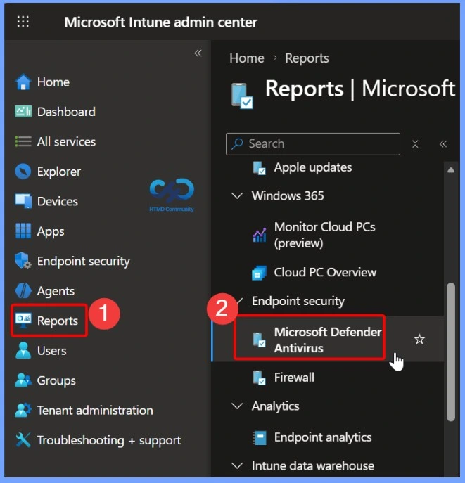
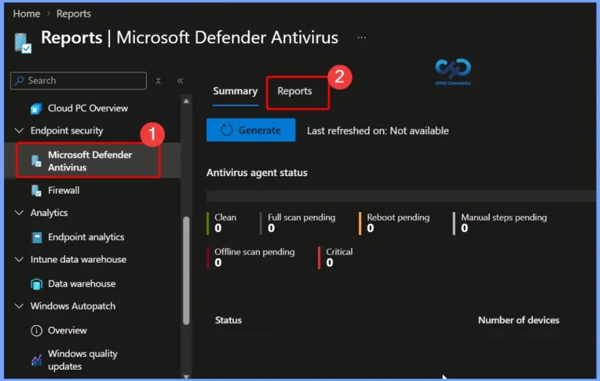
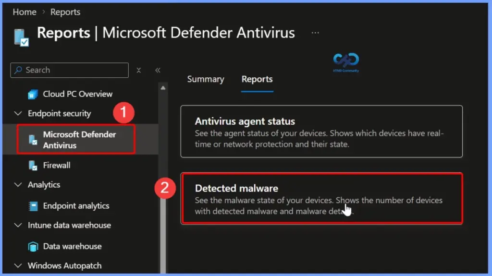
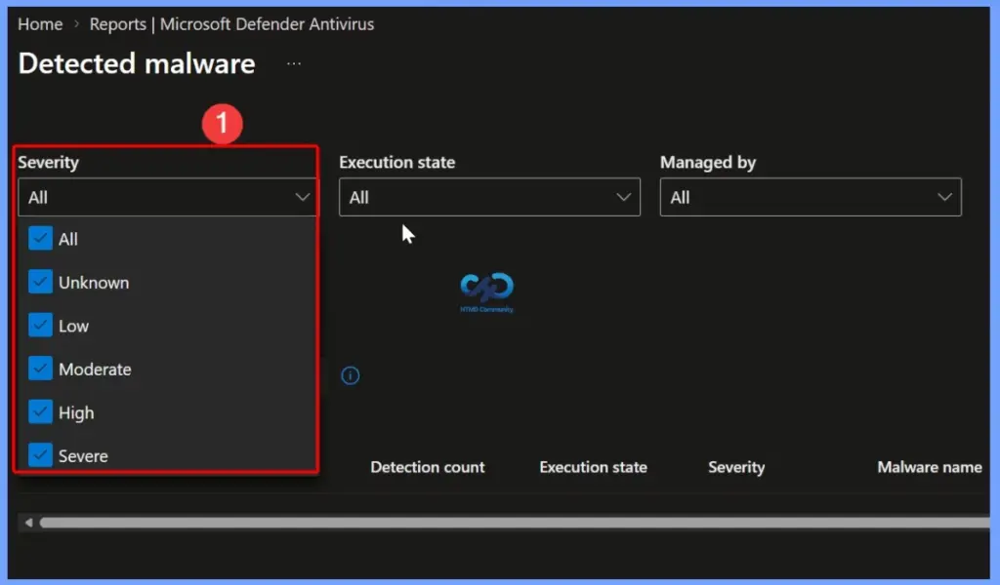
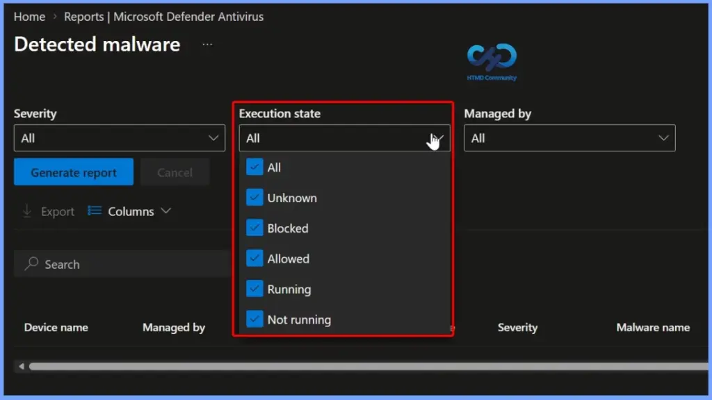
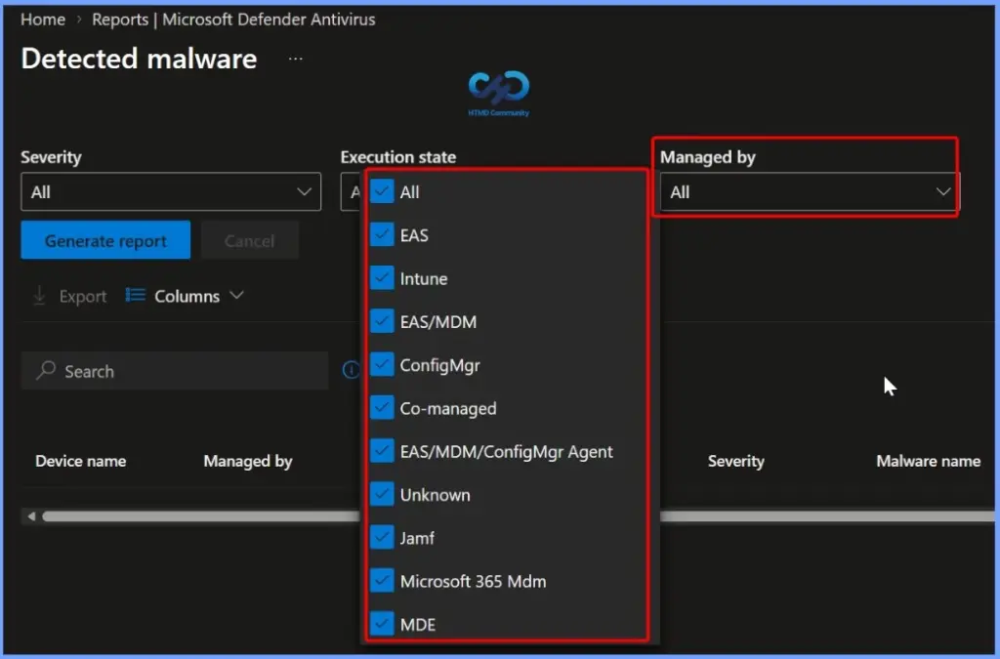
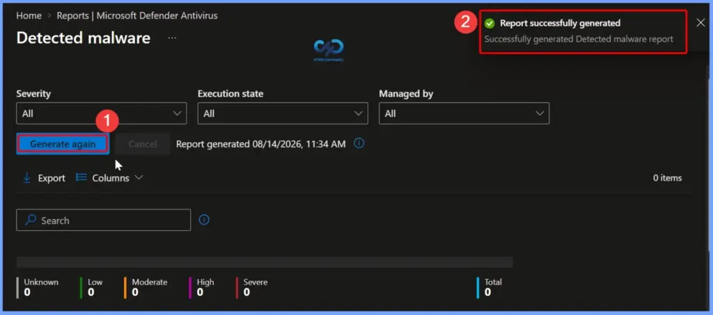
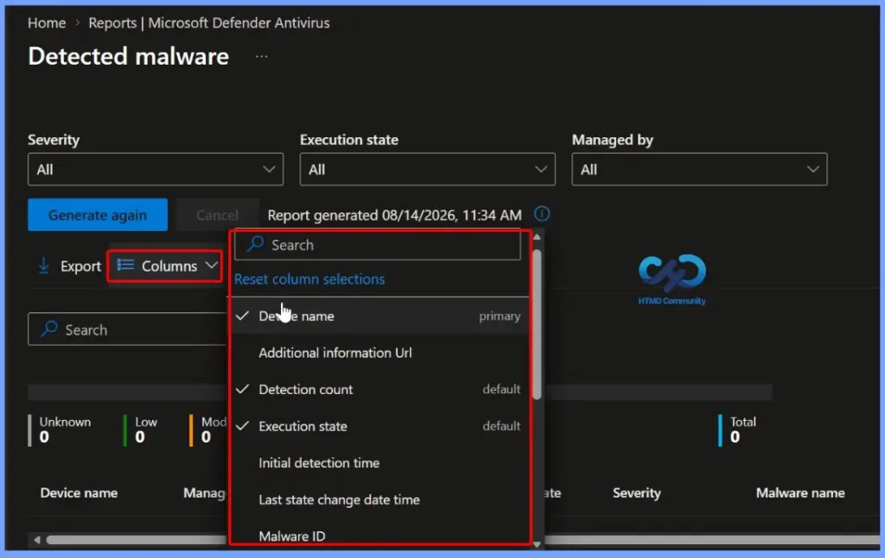
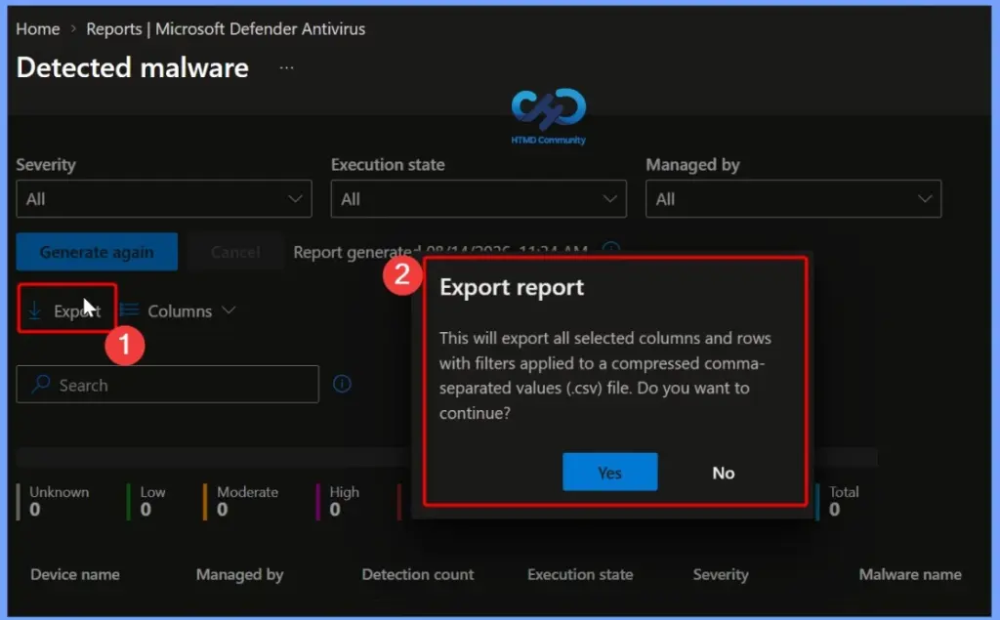
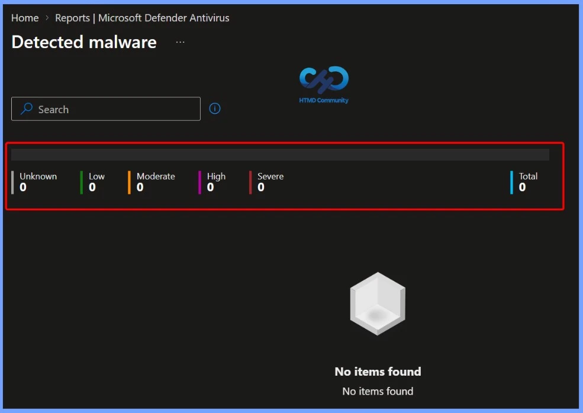

Key Takeaways
- Identifies Malware-Detected Devices – Shows which managed devices have detected malware.
- Provides Malware Details – Displays information about the detected malware or security threat.
- Shows Malware Status – Helps administrators understand the current state of detected threats.
- Supports Security Investigation – Helps identify affected devices for further investigation and troubleshooting.
- Enables Faster Remediation – Administrators can use the report to take appropriate actions to protect and secure affected devices.
The Detected malware report provides detailed information about malware detected across your managed devices. At the top, the report summarises the number of devices based on severity, including Unknown, Low, Moderate, High, and Severe, along with the Total number of detected devices. This gives administrators a quick overview of the overall malware situation.
Detected Malware Report in Microsoft Intune to Device Malware Status Detection Count and Detailed Threat Information
The detailed section provides important information, including Device Name, Managed By, Detection Count, Execution State, Severity, Malware Name, and Malware Category. These details help Intune administrators identify the affected device, understand how many times the malware was detected, check its execution status and severity, and determine the type of malware for further investigation and remediation.

Microsoft Defender Antivirus Reports in Intune
The Microsoft Defender Antivirus section in Intune provides administrators with visibility into the antivirus health and security status of managed devices. From Reports > Microsoft Defender Antivirus, administrators can open the Reports tab and generate the latest report to monitor antivirus status across the organisation.

Detected Malware Report in Microsoft Intune
The Detected malware report is available under Reports > Microsoft Defender Antivirus > Reports in the Intune admin center. It provides visibility into the malware state of managed devices, including the number of devices with detected malware and relevant malware details. This report helps administrators monitor and investigate security threats across the organization.

Filtering Detected Malware by Severity
The Detected malware report in Microsoft Intune allows administrators to filter malware information based on Severity state. The Severity filter includes options such as Unknown, Low, Moderate, High, and Severe, making it easier to focus on threats by risk level.
| Filtering Detected Malware by Severity |
|---|
| All Unknown Low Moderate High Severe |

Filtering Malware by Execution State
The Execution state filter in the Detected malware report helps administrators identify the current state of detected malware on managed devices. The available options include Unknown, Blocked, Allowed, Running, and Not running, along with All to display all available results.

Filtering Detected Malware by Management Authority
The Managed by filter in the Detected malware report allows administrators to filter malware detections based on the management authority responsible for the device. The available options include EAS, Intune, EAS/MDM, ConfigMgr, Co-managed, EAS/MDM/ConfigMgr Agent, Unknown, Jamf, Microsoft 365 MDM, and MDE.

Generating and Refreshing the Detected Malware Report
The Detected malware report allows administrators to generate the latest malware information by selecting the required filters for Severity, Execution state, and Managed by. After selecting the appropriate filters, clicking Generate again refreshes the report and retrieves the latest available data.
Once the report generation is completed, Intune displays a “Report successfully generated” notification along with the report generation time. Administrators can then review the results and use options such as Export and Columns to analyze or customize the displayed malware information.

Customizing Columns in the Detected Malware Report
The Columns option in the Detected malware report allows administrators to customize which information is displayed in the report. Administrators can use the search option to quickly find specific columns and select or deselect fields based on their reporting requirements.
Available columns include Device name, Detection count, Execution state, Initial detection time, Last state change date and time, Malware ID, and Additional information URL. This customization helps administrators focus on the most relevant malware information when analyzing and investigating security threats.
- Device name
- Additional information Url
- Detection count
- Execution state
- Initial detection time
- Last state change date time
- Malware ID
- Malware category
- Malware name
- Malware state
- Managed by
- Severity
- UPN
- User email
- User name

Exporting the Detected Malware Report
The Export option in the Detected malware report allows administrators to download the report data for further analysis or documentation. When Export is selected, Intune provides a confirmation message indicating that the selected columns and rows, along with any applied filters, will be exported.
The report is exported as a compressed CSV file, which can be opened and analyzed using tools such as Microsoft Excel. This is useful for sharing malware information, maintaining records, performing further analysis, or creating custom reports for security and compliance purposes.

Malware Severity Summary in the Detected Malware Report
The Detected Malware Report provides a quick summary of malware detections based on their severity level. The summary displays the number of detections categorized as Unknown, Low, Moderate, High, and Severe, along with the Total count.
This severity overview helps administrators quickly understand the organization’s current malware status and identify whether any devices have high- or severe-level threats that may require immediate investigation and remediation.

Resources
Need Further Assistance or Have Technical Questions?
Join the LinkedIn Page and Telegram group to get the latest step-by-step guides and news updates. Join our Meetup Page to participate in User group meetings. Also, join the WhatsApp Community and the Whatsapp channel to get the latest news on Microsoft Technologies. We are there on Reddit as well.
Author
Anoop C Nair is Workplace Technology solution architect with 25+ years of experience in global enterprise organizations such as JP Morgan, Capgemini, etc. He is Microsoft Certified Trainer. Microsoft MVP from 2015 onwards for consecutive 11 years! He also conducts Intune and modern workplace tech training for enterprise organizations. He is Blogger, Speaker, and Founder of HTMD Community and HTMD Conference. His focus is on Device Management technologies such as Intune, Windows, Cloud PC. He writes about technologies like Intune, SCCM, Windows, Cloud PC, Windows, Entra, Microsoft Security.